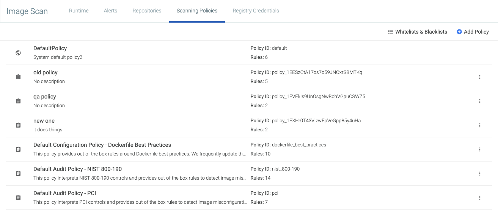
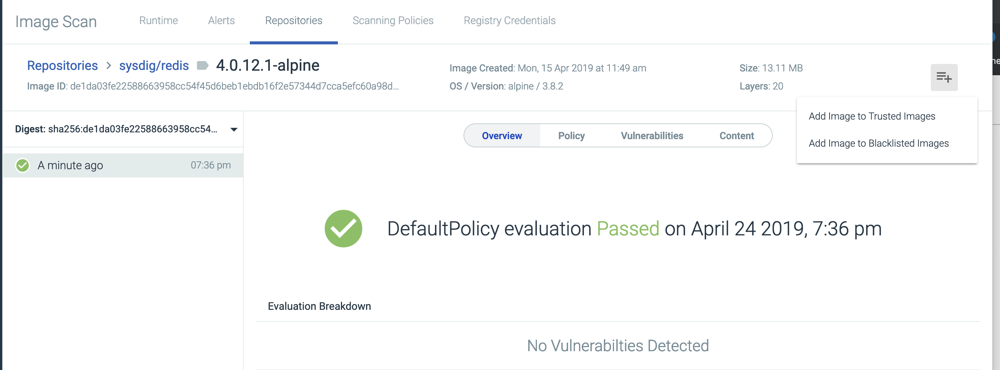

Whitelist | Blacklist CVEs and Images
Sysdig Secure allows users to define CVEs and images as globally trusted or blacklisted. For example, a low-risk CVE can be globally approved to prevent it from impacting builds that include more critical fixes. Alternatively, specific images can be marked as globally approved or not to ensure they always/never pass a scan.
Tip
Blacklist options for other entities, such as users, ports, packages, etc., are listed in Scanning Policy Gates and Triggers.
Review the Whitelisted/Blacklisted CVEs and Images
To review the current list of whitelisted/blacklisted CVEs and images:
From the I
mage Scanningmodule, selectScanning Policies.Click the
Whitelists and Blacklistsbutton.Choose the relevant tab (
CVE Whitelist,Global Trusted Images, orGlobal Blacklisted Images).
Whitelist a CVE
There are two ways to whitelist a CVE - from the Scanning Policies tab, and from the Repositories tab.
From the Scanning Policies Tab:
From the I
mage Scanningmodule, selectScanning Policies. Click
Whitelists and Blacklists.Click
Add CVE,add each CVE in a comma-separated list, then clickOkto save.Each item in the list must follow the CVE naming format (
CVE-YEAR-ID).
From the Repositories Tab
From the I
mage Scanningmodule, chooseRepositoriesand select one of the listed repos.If there is a policy result related to a vulnerability, you can whitelist that CVE.
Click the
More Options(+) icon beside the relevant CVE.
Select
Add CVE to Global Whitelist.
The CVE will now be listed in the CVE Whitelist tab.
Whitelist / Blacklist an Image
Note
If an image is added both in the "Trusted Images" list and in the "Blacklisted Image" list, the blacklisted one takes precedence.
There are two ways to whitelist or blacklist an image - from the Scanning Policies tab, and from the Repositories tab.
From the Scanning Policies tab:
From the I
mage Scanningmodule, selectScanning Policies.Click
Whitelists and Blacklists.Choose the relevant tab (
Global Trusted Images, orGlobal Blacklisted Images) and click theAdd Imagebutton.Add each image in a comma-separated list, then click
Ok.A tag name must be valid ASCII and may contain lowercase and uppercase letters, digits, underscores, periods and dashes.
A tag name may not start with a period or a dash and may contain a maximum of 128 characters.
From the Repositories tab:
From the I
mage Scanningmodule, choose theRepositoriestab.Select the relevant repository from the list and open the relevant image.
Click the
More Options(+) icon at the top of the page: Select either
Add Image to Trusted ImagesorAdd Image to Blacklisted Imagesas needed.
The CVE will now be listed in the Global Trusted Images tab or Global Blacklisted Images tab, as appropriate.
Remove a CVE or Image from the Whitelist/Blacklist
To remove one or more CVEs or Images from the various lists:
From the I
mage Scanningmodule, selectScanning Policies.Click
Whitelists and Blacklists.Navigate to the relevant tab (
CVE Whitelist,Global Trusted Images, orGlobal Blacklisted Images).Click the
Delete(X) icon beside the relevant CVEs/images
Click
Save.